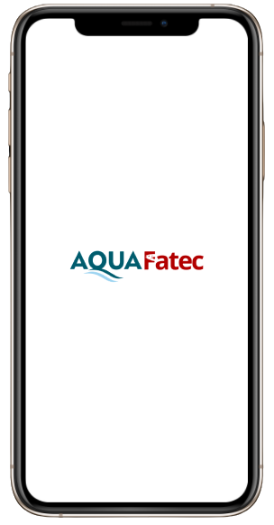
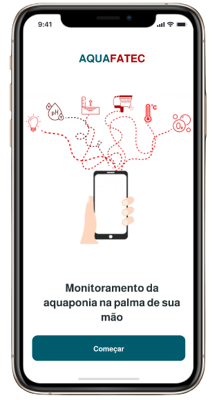
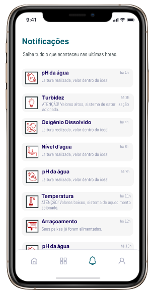
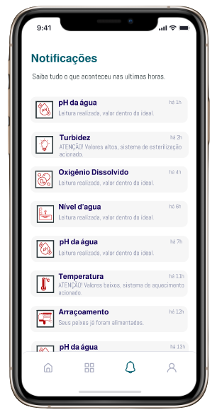
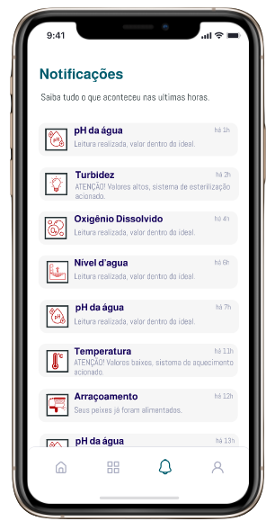

AquaFatec
Nesse projeto visei a automatização do sistema de aquaponia presente na faculdade da Fatec. Realizei levantamento de requisitos e desenvolvi protótipo de um aplicativo para monitoramento. Apresentei o mesmo na 16ª MiT da Fatec Itapetininga e tirei nota 9,8 pela banca. O projeto continua em andamento, mas agora desenvolvendo o aplicativo utilizando Framework Flutter com linguagem em Dart; Implementação dos sensores e arduino utilizando o protocolo MQTT e a criação de um banco de dados.


 

